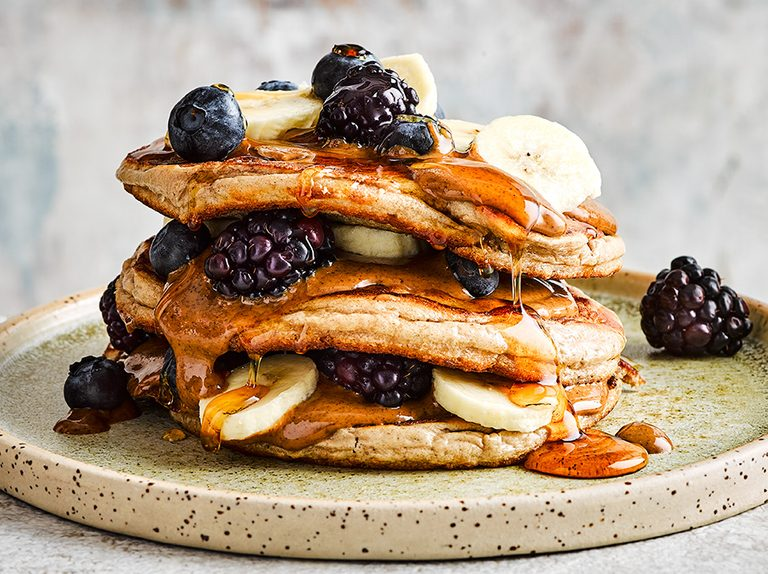

Oat Protein Pancakes

High Protein Oat Protein Pancakes
For the weekends or if you want to wake up a bit earlier to enjoy these. Packed with protein and so tasty. Recipe servces 1 person.
Ingredients
- 80g of Oats
- 40g Protein Powder
- 100g Egg Whites
- 250mL Almond Milk
- 2tbsp Peanut Butter Sauce
- Maple Syrup
- Sliced Fruits/Berries
Instructions
- Blend the oats into a flour
- Add the rest of the ingredients and blend further to make a smooth batter
- Heat a pan to medium heat and lightly grease with a little oil
- Add the mix to each corner of the pan to form little circles
- Add the mix to each corner of the pan to form little circles
- Cook until bubbles form on top and then flip until both sides are brown
- service with your choice of toppings - they're unlimited to the Add Ons we suggested!
Nutrition/serving
- 670kcal
- 45g Protein
- 65g Carbs
- 22g Fat